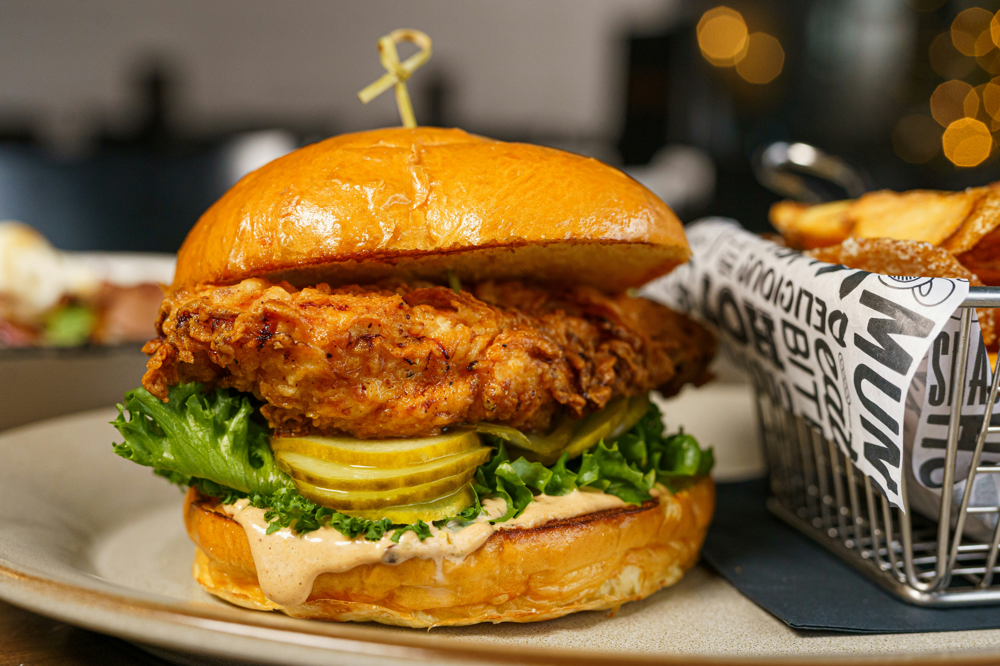

Chicken Sandwich

Photo by
Hybrid Storytellers
on
Unsplash
Easy and Filling Chicken Sandwich
This chicken sandwich combines seasoned chicken with fresh vegetables and
creamy sauce between slices of bread.
It is perfect for lunch and can be prepared quickly.
Ingredients
- 2 slices bread
- 150g cooked chicken
- 2 lettuce leaves
- 2 tomato slices
- 1 tablespoon mayonnaise
- 1 teaspoon mustard
- Salt and pepper
Steps:
- Cook and season the chicken.
- Toast the bread lightly.
- Spread mayonnaise and mustard on the bread.
- Add lettuce and tomato.
- Place the cooked chicken on top.
- Add the second slice of bread.
- Cut the sandwich and serve.